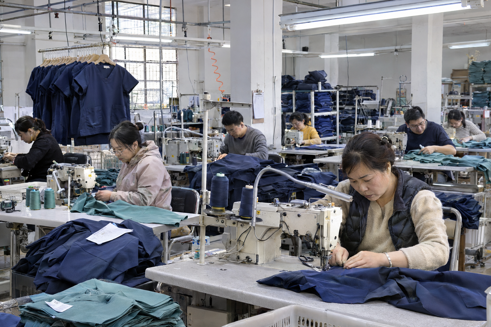

FIT & FUNCTION
Choosing scrubs that
move with your team
Compare stretch, pocket placement and fit for different roles and working routines.
Read the guideMEDICAL APPAREL MANUFACTURER
Scrub caps, uniforms and healthcare textiles. Developed, sampled and produced around your requirements.

MEET YOUR MANUFACTURER
The people, equipment and production stages behind your medical apparel order.
Patterns, materials, sewing and packing come together around your approved specification. Review the details at each stage of your order.
PRODUCT RANGE
Choose your styles, then define fabric, fit, color and branding.
Tie-back, bouffant & ponytail styles.
Coordinated tops & trousers.
Clinical & laboratory apparel.
Patient & examination wear.
Reusable gown development.
Surgical & healthcare textiles.
Sheets, pillowcases & bedding sets.
Headbands, badge reels & footwear.
THE MEDWEAR JOURNAL
A closer look at fit, coordinated collections and the details that make a garment your own.
FIT & FUNCTION
Compare stretch, pocket placement and fit for different roles and working routines.
Read the guideCOLLECTION PLANNING
Pair scrubs, caps and lab coats with a consistent color palette and size range.
Read the guidePRIVATE LABEL
Prepare references, artwork and a clear specification for your first sample.
Read the guideFABRIC & FIT
Choose around the feel, fit and care needs of your collection.
Compare fiber blend, fabric weight, softness and opacity.
Bring your reference fabric or intended use.Review movement, ease, pocket position and your size range.
Confirm the fit through a physical sample.Define your shades, wash conditions and testing needs.
Agree specifications before production.OEM / ODM & PRIVATE LABEL
Start with a reference style, product idea or technical pack.
Confirm fit, fabric and branding before planning the bulk order.
Size chart, silhouette, pockets, sleeves and closures.
Artwork, placement, colors and sample approval.
Brand labels, care labels, buttons and finishing.
Folding, individual bags, labels and carton requirements.
QUALITY & ORDER PREPARATION
Define the checkpoints around your agreed specification and approved sample.
Measurements, workmanship and finishing details.
Compare composition, color, fabric feel and approved reference materials.
Review seam construction, pocket placement and finishing as garments are made.
Check key dimensions, fit details, appearance and brand placement.
Review product labels, size and color quantities, packing and carton marks.
Review the approved sample, fabric, sizing and packaging together with your next quantities and delivery needs.
FROM BRIEF TO BULK ORDER
Agree the practical details early, so each stage starts from a shared understanding.
Products, quantities by style and color, materials and your target market.
Order quantities confirmed by specificationConfirm fit, fabric, branding and the changes needed before approval.
Sample scope, fees & timing agreedReview the approved details and material readiness for your order.
Schedule confirmed for your projectAgree packing, destination and shipping requirements before dispatch.
Order-specific packing & shipmentBUYER RESOURCES
BUYER QUESTIONS
Practical answers on samples, quantities, customization and delivery.
MOQ depends on the product, fabric, color and customization. Share your requirements for an order-specific quote.
Discuss the sample scope, fees and timing with our team, then confirm the details you want to review before bulk production.
Share your artwork, label, embroidery and packing requirements so the proposed details can be reviewed with your sample.
The schedule is confirmed for your order after reviewing quantities, materials, approvals and the delivery destination.
Agree material, measurement, workmanship, labeling and packing checkpoints against your approved specification.
Review the approved reference sample and current specifications together with any changes to quantity, materials or packaging.
Include product references, quantities by size and color, branding needs and your delivery destination.
TALK TO OUR FACTORY
A product idea or reference photo
is a good place to start.